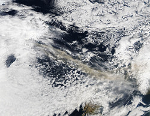
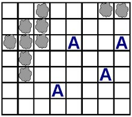
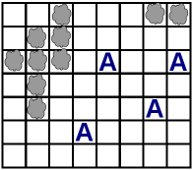
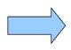
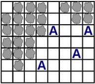
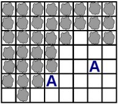

Para efeitos da nota atribuida à resolução de exercícios ao longo do semestre - Submeter até 23:59 de 13 de Dezembro
(o problema continuará depois disponível para submissão, mas sem contar para a nota)
É o caos nos aeroportos! Um vulcão acaba de entrar em erupção provocando uma nuvem de cinzas que se alastra e impede a circulação aérea. O governo da Onilândia está muito preocupado e quer saber quando é que a nuvem de cinzas irá atingir os aeroportos onilandeses.
O governo tem acesso a um mapa obtido via satélite que detalha a situação corrente. O mapa é um rectângulo que está dividido em quadrículas mais pequenas. Tendo em conta a situação em análise, apenas são distinguidos três tipos de quadrículas: nuvem (indicando que esse sector do mapa está neste momento coberto por uma nuvem de cinzas), aeroporto (letra 'A', indicando que esse sector do mapa contém um aeroporto) e todas as outras (que não têm neste momento nem uma nuvem nem um aeroporto). Um exemplo de um mapa seria o indicado na figura seguinte:

À medida que o tempo vai passando a situação vai piorando. De facto, por cada dia que passa, a nuvem expande-se uma quadrícula na horizontal e na vertical. Dito de outro modo, ao fim de um dia, todas as quadrículas que estavam adjacentes (vertical ou horizontalmente) a uma quadrícula com nuvem, passam também elas a conter nuvens. Exemplificando a evolução da situação ao fim de dois dias, teríamos o seguinte:
|  |  |  |  | |
| Hoje | Amanhã (1 dia depois) | 2 dias depois |
Para preparar convenientemente os planos de contingência, o governo necessita de saber duas coisas: quantos dias demorará até pelo menos um aeroporto ficar coberto pela nuvem e daqui a quantos dias os aeroportos estarão todos eles cobertos pela nuvem. Tens de ajudar!
Dado um quadriculado de L linhas por C colunas indicando a posição actual da nuvem e dos aeroportos, a tua tarefa é descobrir Nmin, o número de dias até um primeiro aeroporto ficar debaixo da nuvem de cinzas e Nmax, o número de dias até todos os aeroportos ficarem cobertos pelas cinzas.
Na primeira linha do input vem dois números inteiros L e C, separados por um espaço, indicando respectivamente o número de linhas e o número de colunas do mapa.
Seguem-se exactamente L linhas, cada uma contendo exactamente C caracteres, descrevendo o mapa. Cada um dos caracteres pode ser:
Existe sempre pelo menos uma quadrícula com nuvem e uma quadrícula com um aeroporto, mas não deves assumir à partida mais nada sobre as outras quadrículas.
O output deve ser constituído exactamente por uma única linha contendo dois números inteiros Nmin e Nmax, separados por um único espaço, indicando respectivamente o número de dias até que um primeiro aeroporto fique coberto pela nuvem e o número de dias até que todos os aeroportos fiquem cobertos.
São garantidos os seguintes limites em todos os casos de teste que irão ser colocados ao programa:
| 1 ≤ L ≤ 250 | Número de linhas do mapa | |
| 1 ≤ C ≤ 250 | Número de colunas do mapa |
7 8 ..#...## .##..... ###.A..A .#...... .#....A. ...A.... ........
2 4
O exemplo de input corresponde à figura do enunciado.
Desenho e Análise de Algoritmos (CC2001)
DCC/FCUP - Faculdade de Ciências da Universidade do Porto